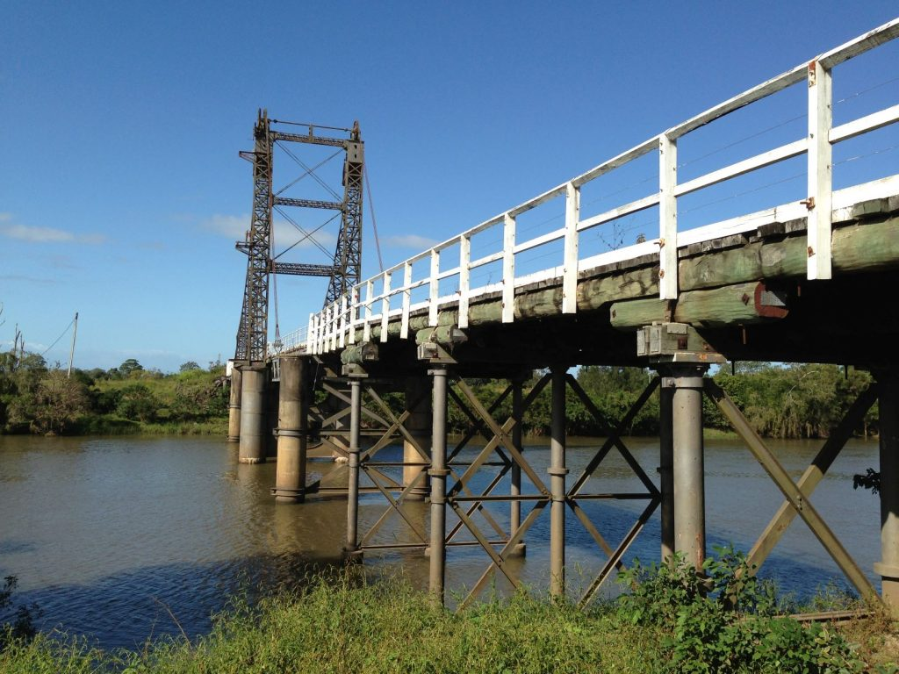
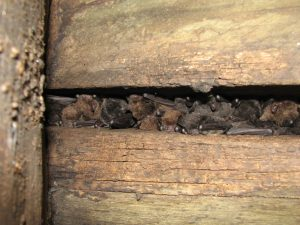

When the heritage listed Glebe Bridge in Coraki, northern NSW, required upgrades, Greenloaning confirmed that the cracks, crevices and gaps between the timbers were providing roosting habitat for a large colony of threatened Southern Myotis (Myotis macropus).
Greenloaning prepared a Review of Environmental Factors (REF), a Flora and Fauna Report and a Microbat Management Plan (MMP) for the Roads and Maritime Services for the project.

To ensure the well-being of the microbats during the bridge works, some bats were translocated from their roosts in the construction spans, to bat boxes installed in undisturbed sections of the bridge. This involved effective coordination of construction schedules and microbat activity to facilitate smooth progression of the bridge upgrade works, while avoiding disruption to the Southern Myotis’s breeding behaviours and avoiding physical disturbance during cold conditions when the bats were likely to be in semi-torpor. Greenloaning also conducted follow-up monitoring to ensure the bats were not impacted by the relocation.
The ecology and management of microbats is a particular specialty of the company director, Alison Martin, who is currently developing industry guidelines, in conjunction with a colleague, for the specific management of microbats in linear infrastructure. Alison presented a poster on the positive outcomes from the Glebe Bridge project at an Australasian Wildlife Management Society Conference (AWMS).